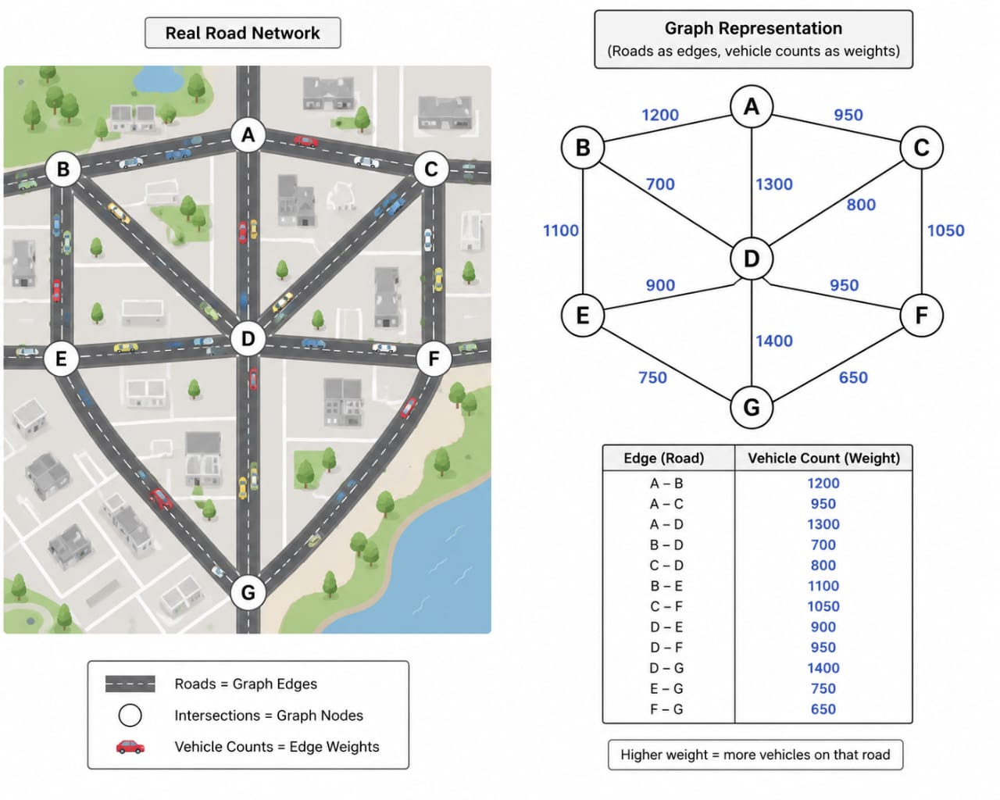

Smart Traffic Signal Optimization
Priority: Not calculated
INTERSECTION
North Road
45 vehicles
East Road
28 vehicles
South Road
60 vehicles
West Road
18 vehicles
Run optimization to view priority order.
| Priority | Road | Vehicles | Green Time | Wait Before | Wait After |
|---|---|---|---|---|---|
| No optimized signal allocation yet. | |||||
Road Network Graph Reference
Real roads are represented as graph edges, intersections as nodes, and vehicle counts as edge weights.

Kruskal MST C Program
#include <stdio.h>
#include <stdlib.h>
struct Edge
{
int src, dest, weight;
};
int findParent(int parent[], int node)
{
if (parent[node] == node)
return node;
return findParent(parent, parent[node]);
}
void unionSet(int parent[], int u, int v)
{
int uParent = findParent(parent, u);
int vParent = findParent(parent, v);
parent[uParent] = vParent;
}
void sortEdges(struct Edge edge[], int edges)
{
int i, j;
struct Edge temp;
for (i = 0; i < edges - 1; i++)
{
for (j = 0; j < edges - i - 1; j++)
{
if (edge[j].weight > edge[j + 1].weight)
{
temp = edge[j];
edge[j] = edge[j + 1];
edge[j + 1] = temp;
}
}
}
}
int main()
{
int vertices, edges;
printf("Enter number of vertices: ");
scanf("%d", &vertices);
printf("Enter number of edges: ");
scanf("%d", &edges);
struct Edge edge[edges];
int i;
printf("Enter source destination weight:\n");
for (i = 0; i < edges; i++)
{
scanf("%d %d %d", &edge[i].src, &edge[i].dest, &edge[i].weight);
}
sortEdges(edge, edges);
int parent[vertices];
for (i = 0; i < vertices; i++)
{
parent[i] = i;
}
int minCost = 0;
int count = 0;
printf("\nEdges in Minimum Spanning Tree:\n");
for (i = 0; i < edges && count < vertices - 1; i++)
{
int u = edge[i].src;
int v = edge[i].dest;
int w = edge[i].weight;
if (findParent(parent, u) != findParent(parent, v))
{
printf("%d - %d = %d\n", u, v, w);
minCost += w;
unionSet(parent, u, v);
count++;
}
}
printf("\nMinimum Cost = %d\n", minCost);
return 0;
}